Брошенное устройство — потерянный пользователь экосистемы: минус CSI, NPS и MAU.
Гигасправка
AI-агент поддержки умных устройств Sber. Чинит поломки раньше, чем вы их заметите.
 Кратко
Кратко
30 секунд на чтениеЛампа «Кухня»
Не в сети · 3 дня
4% просто бросают сломавшееся устройство
150 000 поломок в месяц, треть — в поддержку.
Починить
Новичок
«Мне нужна простая кнопка»
Новички не доверяют ботам. Им нужен результат.
Проблема устранена
Агент переподключил лампу
AI-агент чинит раньше, чем вы заметите поломку
Пользователь узнаёт о сбое, когда он уже решён.
Смотреть решение150 000 поломок умных устройств каждый месяц
150 000 поломок в месяц100%
63% чинят сами33% идут в поддержку
4%
бросают устройство
Треть идёт в поддержку, 4% сдаются
Брошенное устройство — минус CSI, NPS и пользователь экосистемы
Лампа «Кухня»
Не в сети
Колонка не видит лампу
И человек остаётся с проблемой один на один
Прошли путь пользователя сами и поговорили с сотней людей
Покупали и настраивали устройства, ломали сценарии, звонили на 900.
82количественных интервью
19глубинных интервью
2интервью с сотрудниками поддержки
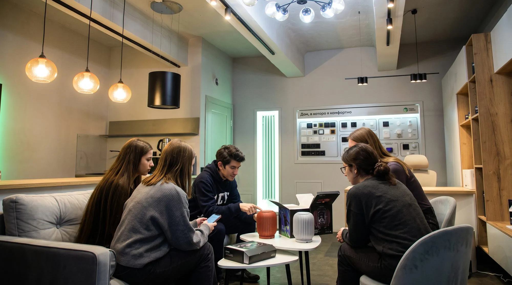
Три сегмента — и осознанный выбор фокуса
Сегмент
Техногики
Разбираются сами, поддержка им почти не нужна.
Сегмент
Уверенные пользователи
Справляются, если подсказать, где искать.
Фокус
Технофобы-новички
Теряются при первой ошибке — для них решение важнее всего.
Инсайты, которые определили решение
Не доверяют чат-ботам
Переписка с ботом воспринимается как отписка, а не помощь.
Хотят «простую кнопку»
Не разбираться в настройках, а нажать — и чтобы заработало.
Поддержка · 900
Вызов…
«а вдруг это глупый вопрос?»
Боятся выглядеть смешно
Неловко звонить в поддержку с «глупым» вопросом.
Инструкция для колонки
какая из них моя?Не знают модель своего устройства
А без неё не найти нужную инструкцию.
Агент сам замечает и чинит поломку
Пользователь узнаёт о проблеме, когда она уже решена.
01Проактивный режим
Агент сам замечает сбой и чинит — до того, как вы заметите.
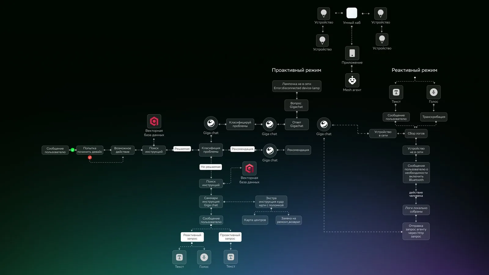
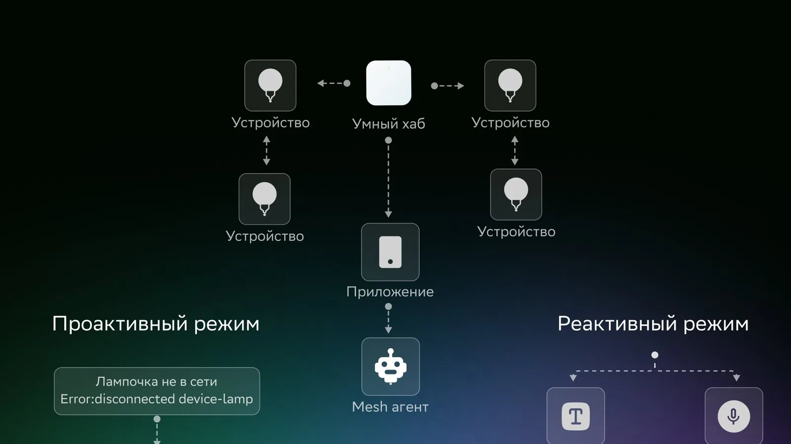
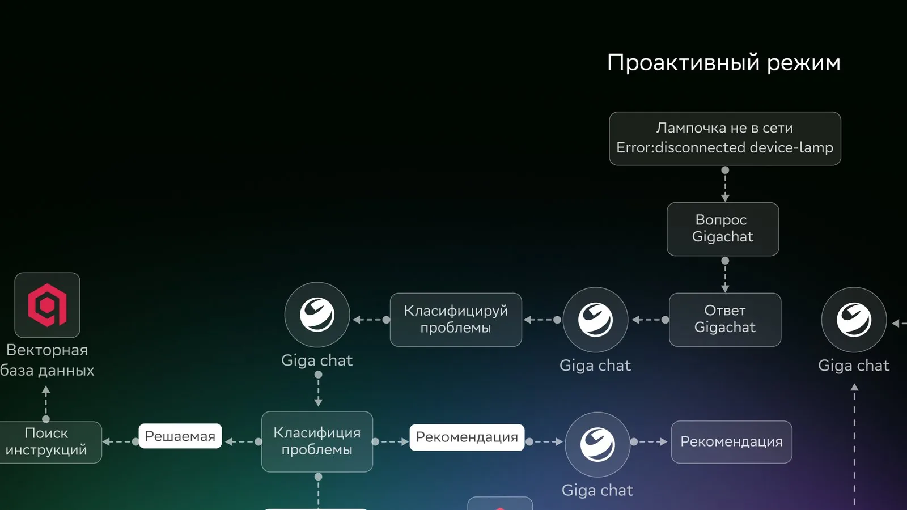
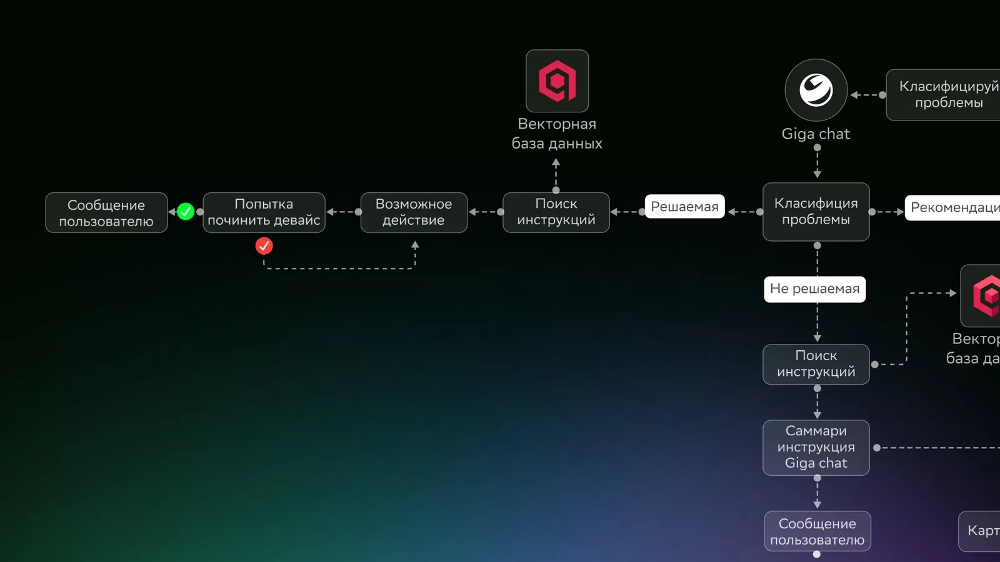
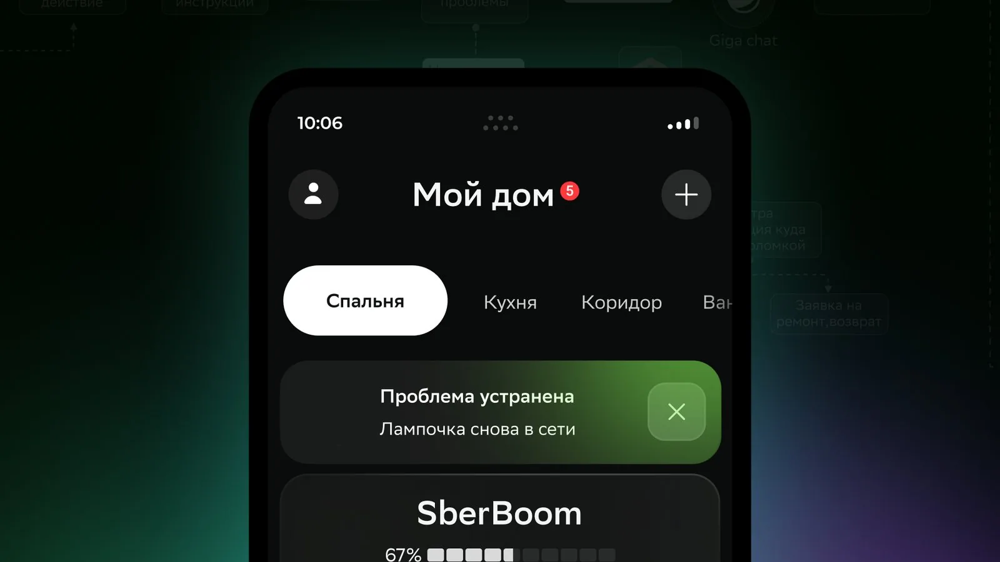
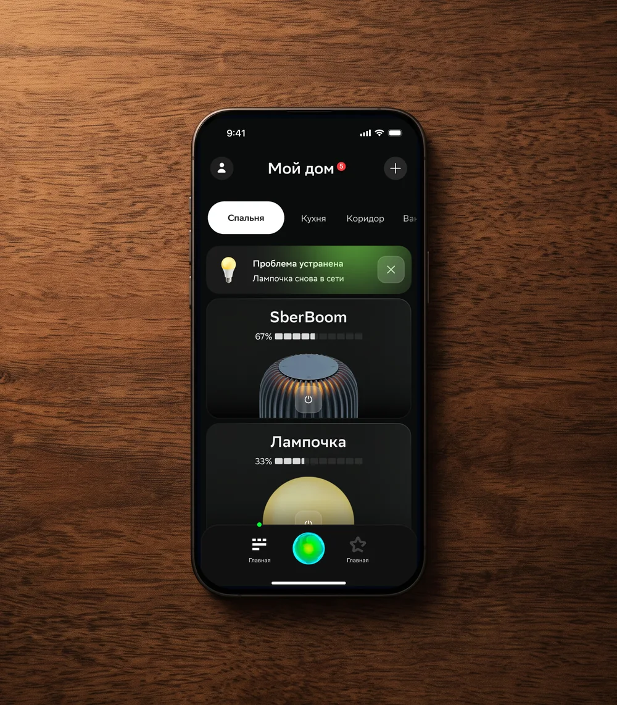
02Реактивный режим
Вы спрашиваете голосом или текстом — ассистент проверяет и ведёт за руку.
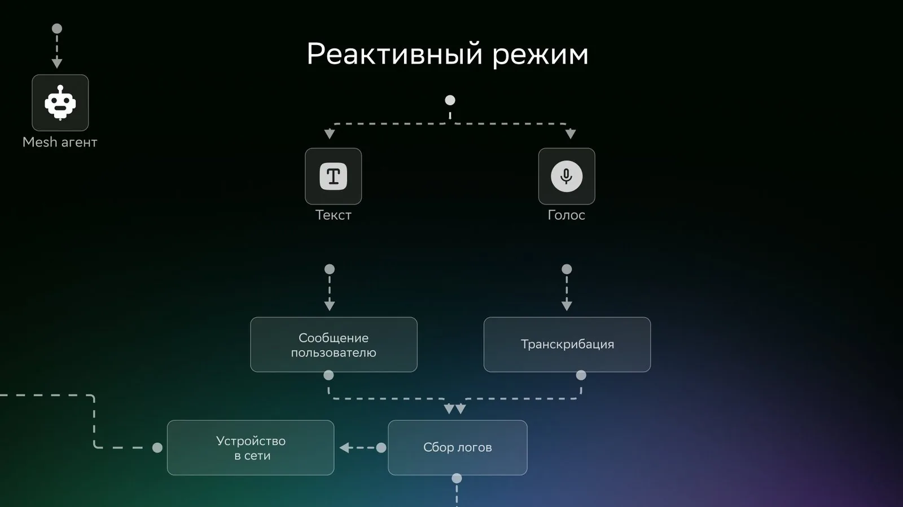
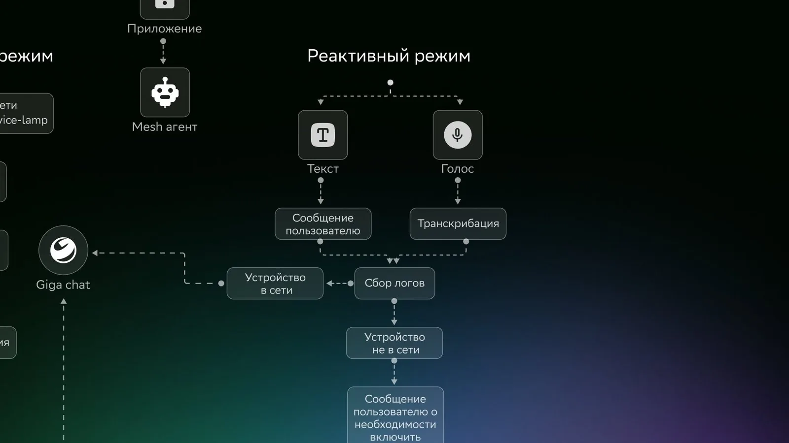
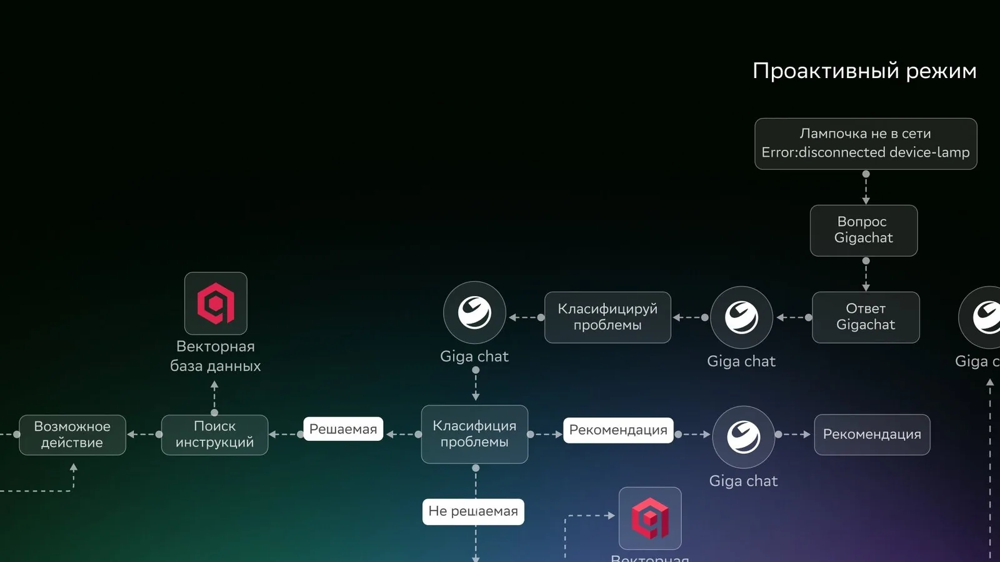
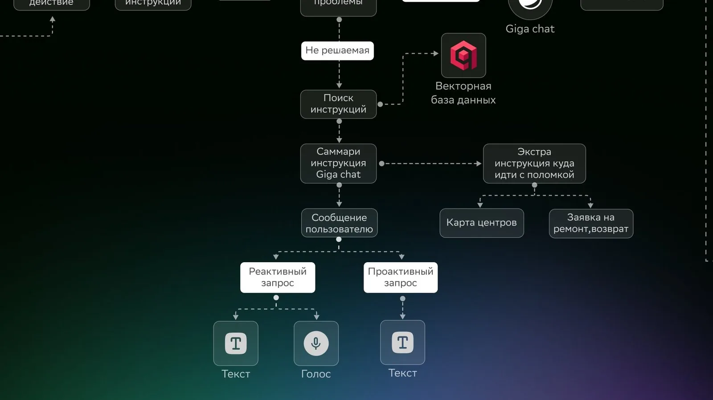
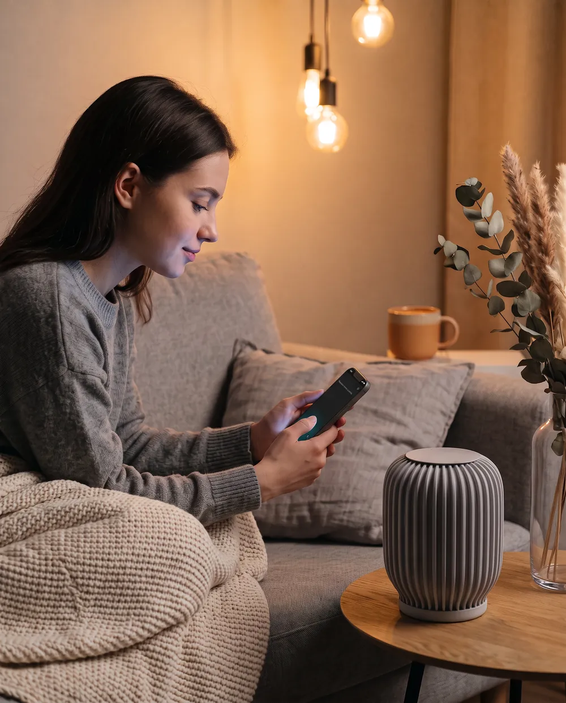
Проверили гипотезу на реальном MVP, а не только на макетах
С разработчиком ГигаЧата собрали рабочего агента на реальных логах устройств. Он верно классифицировал проблемы и находил инструкции.
Решение — не фантазия дизайнера, а проверенная концепция.
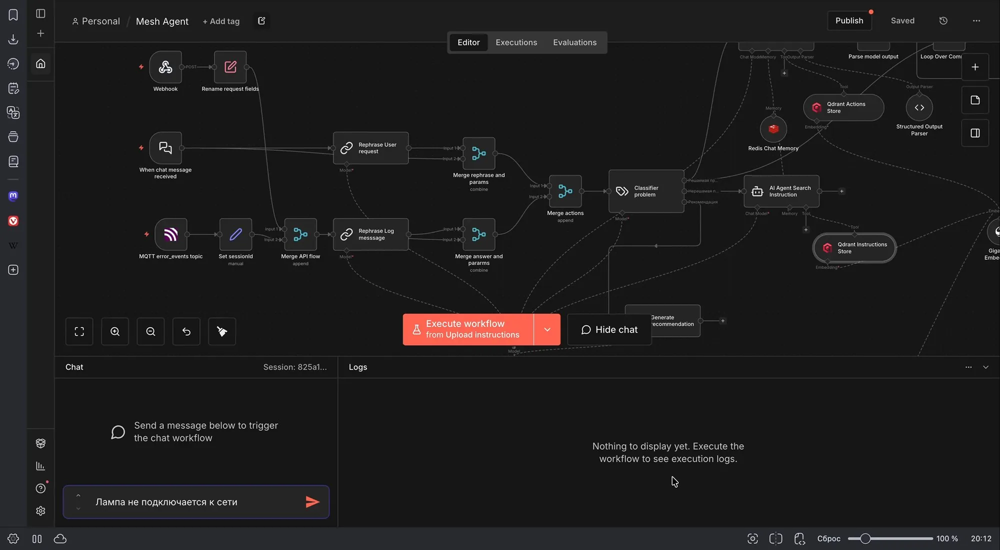
Когда агент не справился сам
01Здоровье устройств
Все устройства дома на одном экране: что работает, а что агент уже починил.
03Возврат по гарантии
Возврат прямо из диагностики — без звонков и чеков.
Даже простая самопомощь уже работает
+1500% чтений статей-инструкций
Инструкции встроили прямо в интерфейс
Помогла ли инструкция?
96% CSAT
Пользователи довольны самопомощью
0+1
CSI +0,3–0,5 — прогноз
Устройства не забрасывают, аналогов на рынке умного дома нет
Данные MVP Sber Devices с инструкциями в интерфейсе — не результат нашего агента, а опора для гипотезы.
«Умный дом с автопилотом» прямо на упаковке
Этого не было в задаче — упаковку придумали и сделали сами.
О самопочинке человек узнаёт ещё в магазине — и это аргумент для покупки.
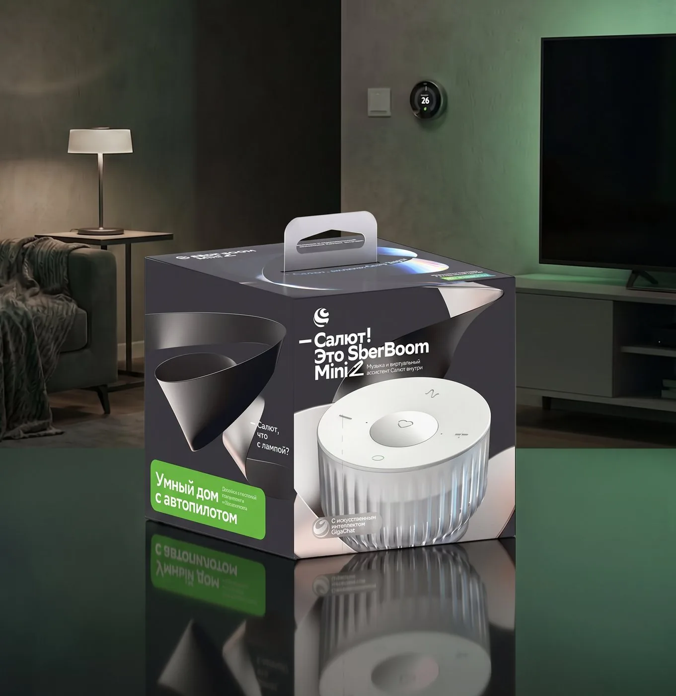
Проект был принят заказчиком
Глубокое исследование и техническая валидация — это рабочее решение, а не красивая презентация.
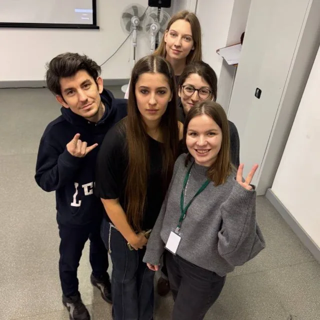
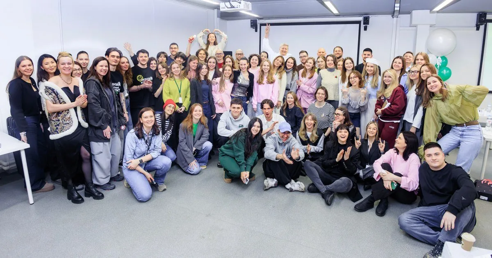